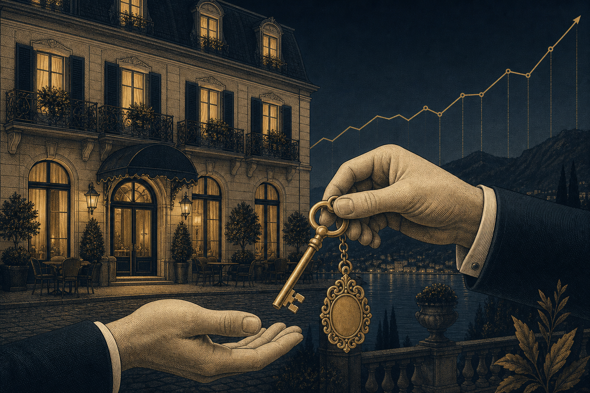

Это обращение — не про «спрятать деньги». Оно про крупный капитал из СНГ, который должен войти в банковскую и правовую систему ЕС, Великобритании, Швейцарии, Сингапура, Гонконга и ОАЭ — и выдержать вопросы банков, судов, нотариусов и наследников. Для западного банка деньги без понятной биографии не существуют, какими бы честными они ни были.
Главный риск сегодня — не комиссия банка и не налоговая ставка. Главный риск — оказаться владельцем денег, происхождение которых невозможно спокойно объяснить за пределами СНГ. Пока всё хорошо, проблема кажется теоретической. В кризисный момент она становится центральной: счета блокируются, активы замораживаются «до выяснения» — и суд смотрит только на то, что вы можете показать прямо сейчас.
Размер капитала не спасает. Спасает только то, можно ли его объяснить. Доказательства собирают заранее — в спокойное время, а не когда счёт уже арестован.
Мы не изобретаем серые схемы. В основе — твёрдая недвижимость, реальный бизнес, понятная корпоративная структура и проверяемая банковская история. Капитал получает экономическую биографию из реальных событий.
Документированная история происхождения средств и состояния, читаемая структура владения, реальный substance. Капитал получает «биографию» — и перестаёт бояться вопросов банков, брокеров и регуляторов. С этого начинается любой маршрут.

Покупка работающего бизнеса — отель, торговля, сервис — с проверкой, структурированием сделки и передачей управления. Реальный актив с денежным потоком: экономическое содержание, доход и основание для резидентства одновременно.
Понятные маршруты: Мальта, ОАЭ, Юго-Восточная Азия. Подбираем юрисдикцию под задачи — налоги, мобильность, образование детей, преемственность — и ведём до карты резидента.
Проверяемая недвижимость под единым мандатом: прямые контракты, юридическая проверка, полное исполнение от брифа до передачи. Запасной аэродром, доходность — и понятный банку актив в истории капитала.
Происхождение средств, структура владения, банки, активы, наследование, слабые места. Под каждый проект — закрытая команда. Если кейс не наш или связан с санкционными ограничениями — скажем сразу.